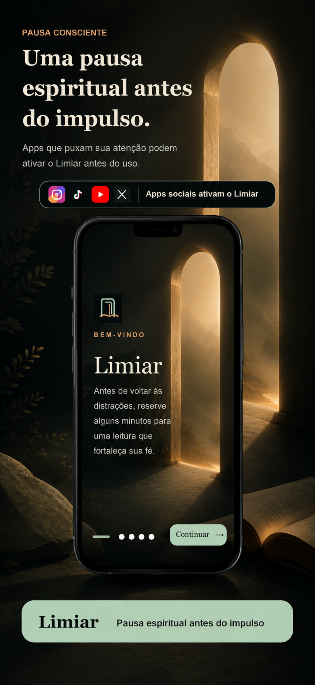
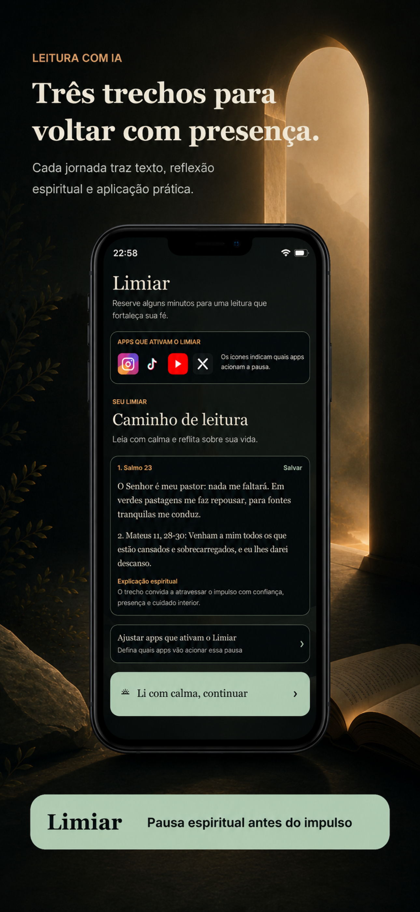
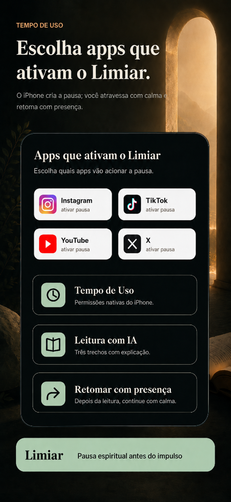
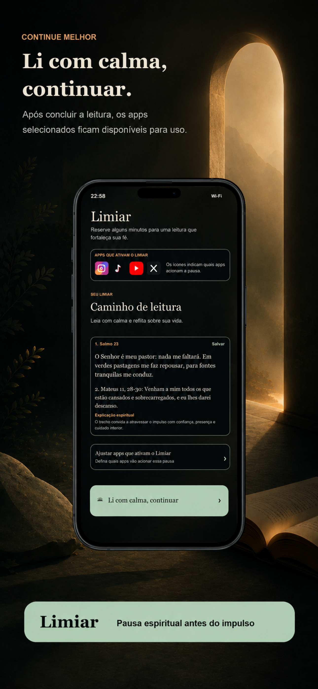

1
Escolha os apps
Use o seletor nativo do Tempo de Uso para definir quais apps vão ativar essa pausa.
Foco com sentido
Uma pausa espiritual antes de voltar para as distrações. Escolha os apps que ativam o Limiar, leia três trechos e retome o uso com mais presença.

Como funciona
Limiar usa recursos nativos do iPhone para criar uma pequena travessia antes de apps que costumam puxar sua atenção no automático.
Use o seletor nativo do Tempo de Uso para definir quais apps vão ativar essa pausa.
No teste gratuito e no Premium, o app mostra três trechos com explicação espiritual, narração e opção individual de salvar. No Modo Essencial, mantém os trechos principais.
Toque em “Li com calma, continuar”: os apps selecionados ficam disponíveis por um período e depois voltam a acionar o Limiar.
Leitura pessoal
O app pode adaptar a linguagem para leituras católicas, evangélicas, judaicas ou espíritas, sem substituir orientação religiosa, pastoral ou rabínica.
Receba combinações novas de trechos e explicações na versão completa, evitando repetições próximas entre uma abertura e outra.
Depois do teste gratuito, continue com os trechos principais e o fluxo de pausa, sem narração nem reflexões por IA.
Cada trecho pode ser salvo individualmente, para revisitar depois o que mais falou com você.
Preferências, histórico e cache ficam no dispositivo, e as pausas dependem das permissões nativas do iOS.
Assets para App Store
A sequência apresenta a promessa atual: pausa consciente, leitura com IA, apps que ativam o Limiar, leitura pessoal e continuidade com calma.




Submissão Apple
Explica dados locais, permissões do Tempo de Uso, suporte e ausência de rastreamento.
Abrir privacidadePágina simples com contato, problemas comuns e informações para App Review.
Abrir suporteTermos básicos de uso, disclaimer espiritual e relação com recursos do iOS.
Abrir termos